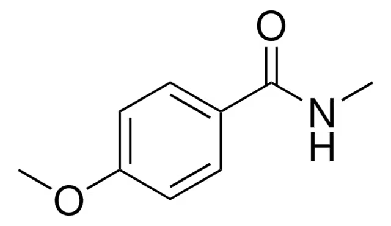

Hibridación
Describe cómo se mezclan los orbitales atómicos del carbono para formar enlaces. Determina geometría, ángulos de enlace y tipo de enlace (σ o π).
| Tipo | Orbitales | Geometría | Ángulo | Ejemplo |
|---|---|---|---|---|
| sp³ | 4 orbitales sp³ | Tetraédrica | 109.5° | CH₄, etano |
| sp² | 3 sp² + 1 p | Trigonal plana | 120° | eteno, carbonilo |
| sp | 2 sp + 2 p | Lineal | 180° | etino, nitrilos |
Regla práctica: cuenta enlaces σ + pares libres alrededor del átomo. 4 → sp³, 3 → sp², 2 → sp. A mayor carácter s, más corto y fuerte el enlace, y más electronegativo se comporta el carbono.
Grupos funcionales y clases de compuestos
Un grupo funcional es el átomo o conjunto de átomos que define la reactividad de una molécula, independientemente del resto de la cadena.
C–C, C=C, C≡C
–OH sobre carbono sp³
C–O–C
–CHO (carbonilo terminal)
C=O entre dos carbonos
–COOH
–COO–
–CONH–
–NH₂, –NHR, –NR₂
–C≡N
Orden de prioridad (para nombrar y para reactividad relativa del carbono carbonílico): ácidos > ésteres > amidas > nitrilos > aldehídos > cetonas > alcoholes > aminas > alquenos/alquinos > alcanos.
Isomería
Compuestos con la misma fórmula molecular pero distinta estructura o distribución espacial.
Estructural (constitucional)
- De cadena: difieren en el esqueleto carbonado (n-butano vs isobutano).
- De posición: mismo grupo funcional, distinta ubicación (2-propanol vs 1-propanol).
- De grupo funcional: mismos átomos, distinto grupo funcional (etanol vs dimetiléter).
Espacial (estereoisomería)
- Geométrica (cis/trans o E/Z): por restricción de rotación en dobles enlaces o anillos.
- Óptica (enantiómeros/diastereómeros): por centros estereogénicos; los enantiómeros son imágenes especulares no superponibles.
- Conformacional: por rotación libre alrededor de enlaces σ (silla/bote, eclipsada/alternada).
Distingue rápido: ¿cambia la conectividad átomo-átomo? → estructural. ¿Misma conectividad, distinta orientación en el espacio? → espacial.
Efecto resonante (mesomérico)
Ocurre cuando los electrones π o pares libres se deslocalizan a través de un sistema conjugado, distribuyendo la carga o estabilizando la molécula. Se representa con varias estructuras de Lewis (resonantes) que contribuyen a un híbrido real.
- +M (donador): grupos con pares libres que ceden densidad electrónica al anillo o cadena (–NH₂, –OH, –OR, halógenos).
- –M (aceptor): grupos que retiran densidad electrónica por conjugación (–NO₂, –C=O, –C≡N).
Clave: el efecto resonante actúa a través de enlaces π (conjugación), no a través de σ. Explica la estabilidad de aniones carboxilato, fenóxido, y la reactividad de anillos aromáticos sustituidos.
Efecto inductivo
Es la transmisión de carga a través de enlaces σ debido a diferencias de electronegatividad. Se debilita rápidamente con la distancia (efecto de corto alcance).
- –I (atractor): halógenos, –OH, –NO₂, –COOH — desestabilizan cargas positivas cercanas, estabilizan negativas.
- +I (donador): grupos alquilo (–CH₃, –C₂H₅) — estabilizan cargas positivas cercanas (por eso los carbocationes terciarios son más estables).
Inductivo vs resonante: el inductivo es siempre a través de σ y decae con la distancia; el resonante requiere conjugación π y puede actuar a distancia si el sistema está conjugado. Un grupo puede tener efectos opuestos en cada categoría (ej. halógenos: –I pero +M).
Conjugación
Se da cuando hay alternancia de enlaces simples y dobles (o pares libres adyacentes a un π), permitiendo que los orbitales p se traslapen de forma continua.
- Requiere que los átomos conjugados sean o se acerquen a la hibridación sp² (orbitales p paralelos).
- Aumenta la estabilidad de la molécula (menor energía) y reduce la brecha HOMO-LUMO — por eso los polienos conjugados absorben luz visible/UV.
- Es la base estructural que permite el efecto resonante.
Hiperconjugación
Interacción estabilizadora entre un orbital σ (C–H o C–C) lleno y un orbital p vacío o un sistema π adyacente. A diferencia de la conjugación clásica, no requiere alternancia formal de enlaces dobles.
- Explica por qué los carbocationes y radicales más sustituidos son más estables (más enlaces σ C–H/C–C adyacentes que donan densidad).
- También explica la mayor estabilidad de alquenos más sustituidos (regla de Zaitsev).
Mnemotecnia: "más sustituyentes alrededor = más hiperconjugación = más estable" — aplica a carbocationes, radicales y alquenos.
Aromaticidad
Un compuesto es aromático si cumple todos estos criterios (regla de Hückel):
- Es cíclico.
- Es plano (permite el traslape continuo de orbitales p).
- Está completamente conjugado (cada átomo del anillo tiene un orbital p).
- Tiene 4n+2 electrones π deslocalizados en el sistema (n = 0,1,2…): 2, 6, 10, 14…
benceno (6π), piridina, ion ciclopentadienilo (6π)
ciclobutadieno (4π) — cumple 1-3 pero tiene 4n π, es inestable
ciclohexano (no conjugado), ciclooctatetraeno (no plano)
Fuerzas intermoleculares
| Fuerza | Origen | Fuerza relativa | Ejemplo |
|---|---|---|---|
| Puente de hidrógeno | H unido a N/O/F con par libre cercano | Fuerte | alcoholes, ácidos, amidas |
| Dipolo-dipolo | Moléculas polares permanentes | Media | cetonas, aldehídos |
| Fuerzas de dispersión (London) | Dipolos inducidos momentáneos | Débil (aumenta con la masa/superficie) | alcanos, gases nobles |
| Ion-dipolo | Ion cerca de molécula polar | Fuerte | NaCl en agua |
Para predecir puntos de ebullición: puente de H > dipolo-dipolo > dispersión, pero una cadena muy larga puede hacer que la dispersión supere a un dipolo débil en una molécula más pequeña. Siempre compara masa molar y forma (más superficie de contacto = más dispersión).
Quiz de práctica
Ejercicio integrador
Familia de la 4-metoxi-N-metilbenzamida. Resuélvelo en papel y marca cada punto al terminarlo.
